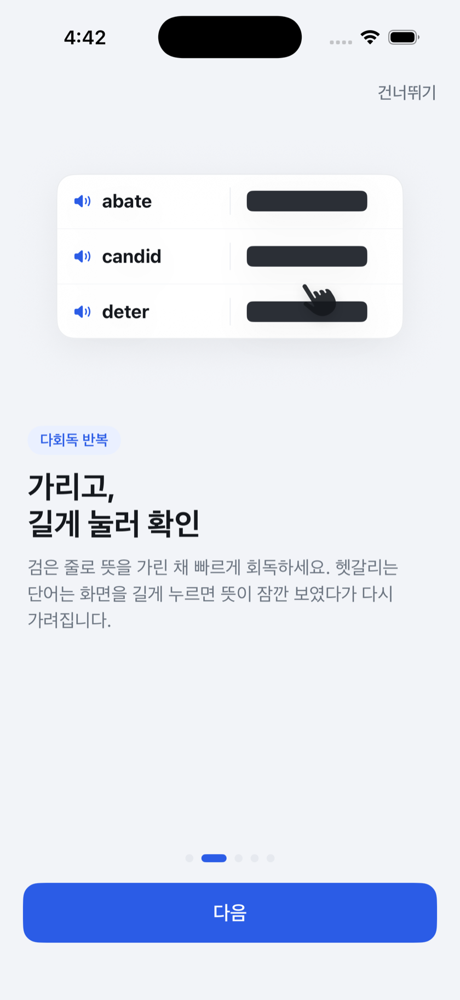

First product
다독보카
Vocabulary training for Korea’s 편입영어 exam — built for repetition that actually sticks.
In development — launching soon
App Store
An AI product studio in Seoul.
Our first product, 다독보카, is almost here — join the launch list and be first in.
First product
Vocabulary training for Korea’s 편입영어 exam — built for repetition that actually sticks.
In development — launching soon
App Store
vorlix builds focused AI tools for specific, underserved problems — starting with language learning, and heading toward cross-border trade. Small products, shipped fast, each one useful on its own. Founded by Dong Yell Lee, a former 3D character artist studying international trade at Kyung Hee University.
vorlix는 구체적인 문제를 깊게 파는 AI 프로덕트 스튜디오입니다. 언어 학습에서 시작해, 국경을 넘는 무역의 영역으로 나아갑니다. 작게 만들고, 빠르게 내놓고, 하나하나 쓸모 있게.
Be first when 다독보카 ships.
출시 소식을 가장 먼저 받아보세요.
One email when it launches. Nothing else.